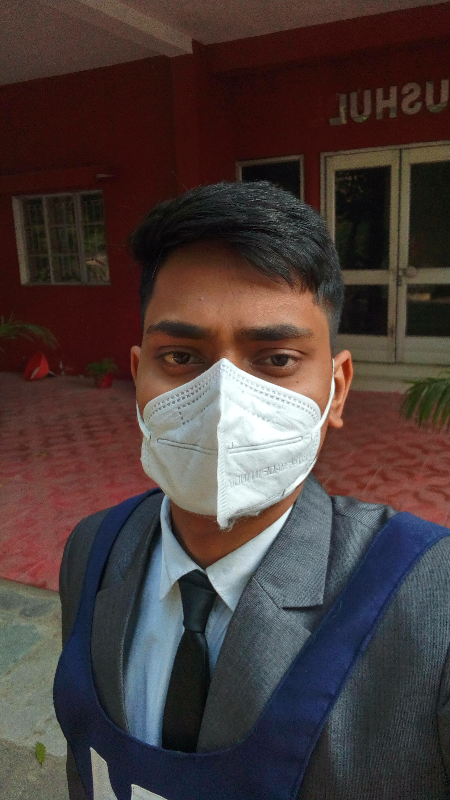

About Me
Personal Details
Myself Gaurav Kumar
Founder Of EDUGLE
Currently Studying At NIT Agartala
Birthday on the date when Dhoni started playing test cricket for India(2nd December)
Age: 19yrs
Indian
I am from
State: Bihar
District: Vaishali
City: Hajipur
Relationship: Single
Best Friend: Myself
Donot have true friends that's why i donot believe in friendship and love
I categorised my friend-list in two parts. One is well wishers and second one is friend(naam wale)
Well wisher-list contains very few but naam wale contains thousands.
Education
Jr Level Education From Class Lkg to Class 6th from Private Schools near village
Class 7th to 10th from BD Public School Panapur,Hajipur,Vaishali
Passed Class 10th in 2018 with 84% Marks
Class 11th and 12th and JEE Prep From Sri Chaitanya Educational Institution,VSKP,AP
Passed Class 12th in 2020 with 85% Marks
Got NIT Agartala in 2021 (Drop year. Prep- Self Study)
Class 10th
English
73 out of 80
Hindi
70 out of 80
Maths
63 out of 80
Science
63 out of 80
Social Science
61 out of 80
Info. Techno.
38 out of 40
Class 12th
English
63 out of 80
Physics
49 out of 70
Maths
75 out of 80
Chemistry
51 out of 70
Info. Techno.
57 out of 70
Favorites or Intrested In
Sports Lover
I watch approx all sports but my favorites are Cricket,Kabbadi
Love playing sports like Cricket,Kabbadi, Basketball,Badminton
Playing and watching Cricket,Kabbadi
Fav. Cricket: Complete Indian Team Except few, ABD,Faf
Die Heart MSDian
Fav. Captain Wicketkeeper: MSD
Fav. IPL Team : CSK
Fav. Pro Kabbadi Team : Patna Pirats
Fav. Footbollar: Sunil Chetri(India), Leon Messy
Fav. Basketball Player : Labron James, Michael Jordan
Hockey : Harmanpreet Singh and complete Indian Team
Fav. Song : Aaho by KD Desi Rock,Purnviram by KD Desi ROck, Asli Hai Veer Whi jo By Rishabh
South Movie Lover
Ideal: MSD,Ratan,Akshay Kumar,Alakh Panday
Love Exploring The Technology
Fav. Junk Food: chaat
Fav. City: Vishakhapatnam
Fav. Color: Blue
Aims and Goals
Making My parents proud on me
Answer to my haters and to all those who left me alone during my hard days
Develop App for my compamy by own
Develop an AI based assiatant by own
Want to help people
Want to serve the nation
Exploring the world
My Philosophy
1. Mere life me ek priority order set hai. I will follow that in any of the situation.
2. True friends are ur well wishers. And your best friend is who is always with u in
all phases of life.
It may hurt someone but according to me friends are like raahgir jo jiwan ke raste me milte hai kuch
dur saath chalte hai and fir apne duniya naamak ek universe me kho jate hai jis universe me hme
entry nhi di jati. So tumarha saacha dost or ur best friend (in apporpriate word I wolud say ur well
wisher) is only that guy who is always with u. Even the nature and god will help both of u to be
together(I mean agar kisi se saacha rista rhta hai to bhagwan and prakrti v hmri maddat krti hai
aapas ke duriya kaamane ke liye.)
I am so lucky that I have a friend of that type (I mean Well-Wishers) named Sachin.
You can read our story in Blog Section of Website.
3. Pyaar byaar saab dhokha hai padh lo beta abhi v mauka hai.
Tumhe asli pyaar whi krta krti hai jo tumarhe success se happy ho na ki tumarhe baabu sonna bolne
se. Like agar apne mummy papa ko tum mom dad pyaar se bolo ya muumy ge papa ho, they never mind
these things and when you get what they want then that moment his/her happiness level is just
tending to infinity.
Here success mtlb paisa,name,fame nhi hai balki tum apne jiwan ki goals achieve kr lo and us samay
tumarhe khushi me v wo tumhe hi credit de and tumhari khushi me saachi wala khush ho whi tumse pyaar
krta hai.
Mummy,Papa,bhaiya,didi,sister will be always with you in ur tough times as well as smooth
period.Other than them if anyone of such kind exist then he is ur well wisher and if u love his/her,
then he/she is ur girlfreind,boyfriend,best- friend.
In short apka/apki gf/bf apko I love u bole ya nhi bole but apko apke carrier apke family apke
khushi pe apko concentrate krne ko kahe that means somehow he is ur well wisher/bf/gf/best-friend
4.
Yes I have crush,girlfreind,wife.
My past is my crush.
My life is my wife.
My future is my family.
My aim is my girlfreind.
My dream is my lover.
My family is my god/love.